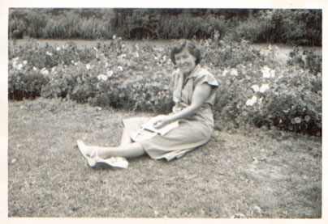
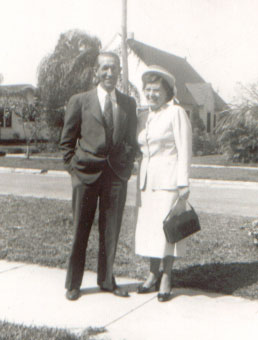

Mattie, Mayme, Mildred, and Maude

| Mayme Victoria Revis was born November 10th, 1900 in Asheville, NC - the firstborn of James and Dellar Revis. She married Bill Hannon November 1st, 1918 in Williamsburg, VA. They made their home in Florida and had three children there. In 1930 her baby daughter died tradgically in a fire started accidentally by her son. |

|
|
Mattie, Mayme, Mildred, and Maude |
After Bill died, Mayme got remarried, to Leonard Rowe. |